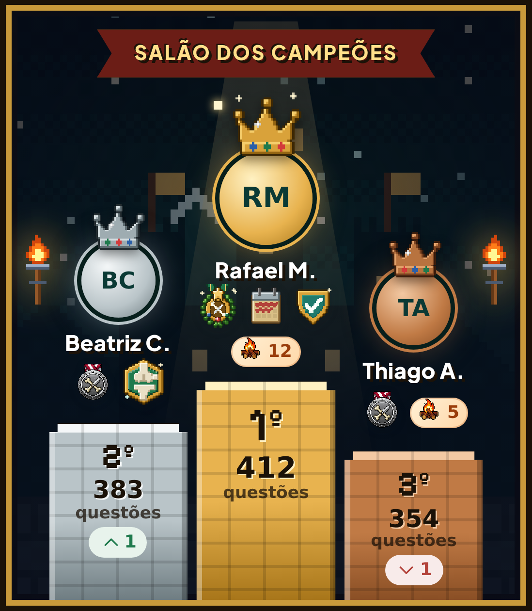

Banca examinadoraProva oral · hoje, 19h
OrtoQuestõesVocê foi convocado.
No ressalto interno do quadril, qual músculo está na origem do impacto?
Apiriforme.Biliopsoas.Ctrato iliotibial.Dadutor magno.
Resposta no próximo story.
TARO2022Banca examinadoraProva oral de ortopedia
OrtoQuestõesArraste e responda antes do examinador.
Convocadoprova oralPergunta do examinadorTARO 2022 · questão real
OrtoQuestõesNo ressalto interno do quadril, o músculo que geralmente está envolvido na origem do impacto é o
Comente a sua letra antes de arrastar.
Resposta do candidatoa mais marcada na sala
Cuidado: esse é o ressalto EXTERNO.
O trato iliotibial escorrega sobre o trocânter maior, do lado de fora do quadril. A pergunta era o interno.
Correção da bancaResposta B · iliopsoas
O tendão do iliopsoas escorrega sobre a eminência iliopectínea ou a cabeça do fêmur. O estalo é ouvido e sentido na virilha.
Piriforme? Outra história: compressão do isquiático.
Parecer da bancaNo Orto Questões, cada resposta vale nota

Tela ilustrativaProvas oficiais comentadas e os OrtoQuestões Simulados, feitos por engenharia reversa da prova.
Ficha de inscriçãoOrto Questões · treino diário
OrtoQuestõesBanca examinadoraProva oral · hoje, 19h
OrtoQuestõesNo ressalto interno do quadril, qual músculo está na origem do impacto?
Resposta no próximo story.
TARO2022Correção da bancaResposta B
Ressalto interno: o iliopsoas salta sobre a eminência iliopectínea, estalo na virilha.
Ressalto externo: o trato iliotibial salta sobre o trocânter maior.
Quem marcou C caiu na pegadinha.
CorrigidoFicha de inscriçãoOrto Questões
OrtoQuestões